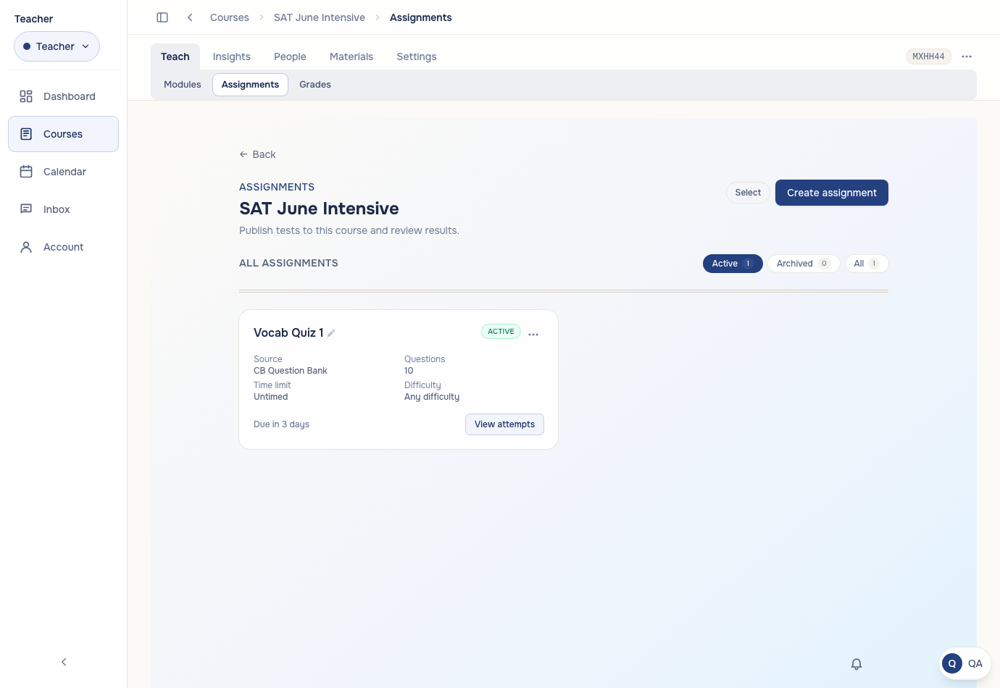
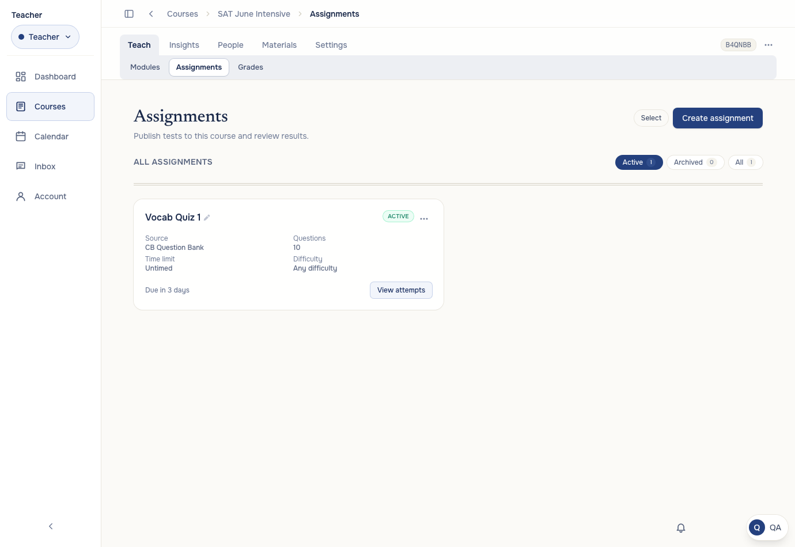
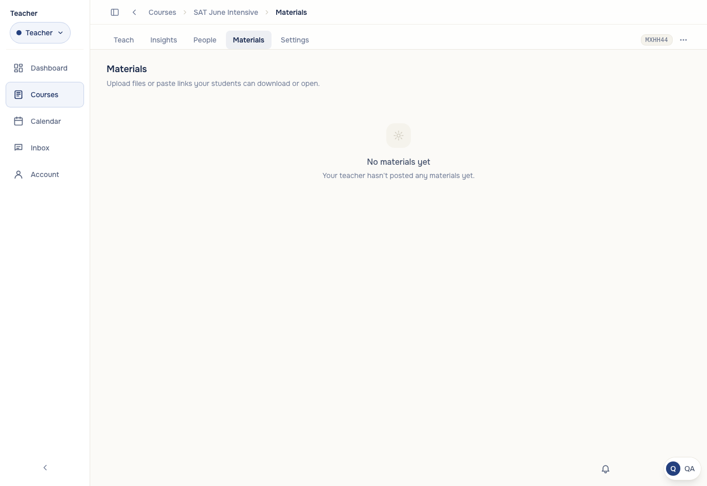
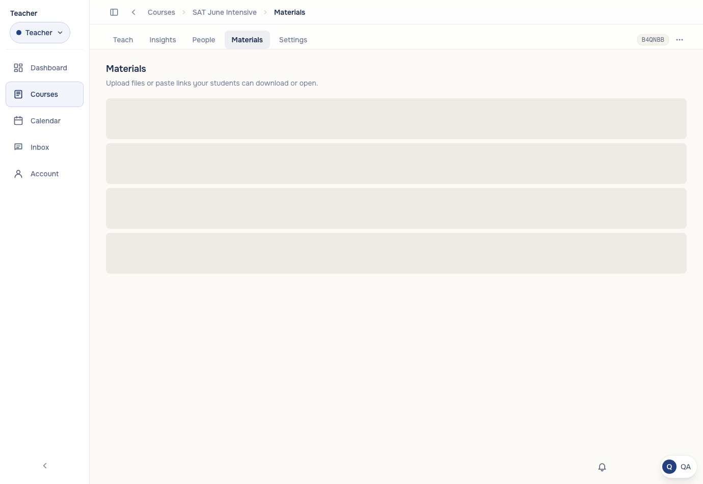

Before: the tab rendered its own full-screen gradient, a narrow centered column, a "← Back" button, and repeated the course name as its title (already in the breadcrumb). After: flat course-tab surface matching Modules/Gradebook — serif "Assignments" title, full-width content, no redundant navigation.


Before: while the profile was still loading, the page committed to the student branch — a teacher saw "Your teacher hasn't posted any materials yet" with no Upload/Add buttons, which then popped in. After: the page holds skeletons until the role is known, then renders the complete teacher UI at once. (Same fix applied to Announcements and Discussions.)


Section count badges rendered a confident "0" while their rows were still loading skeletons. Now: an em-dash while loading, and a muted (non-accent) badge when the count is genuinely zero so the eye isn't drawn to nothing.